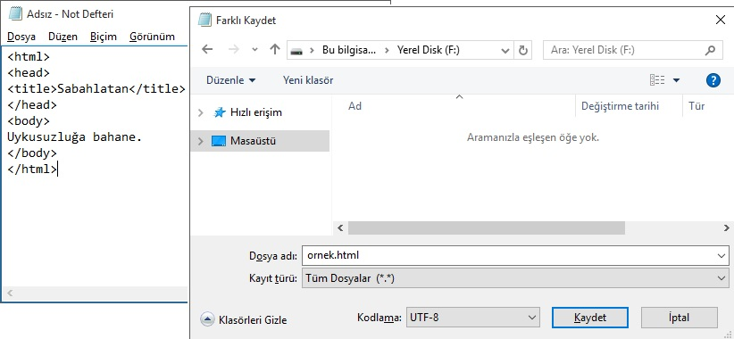
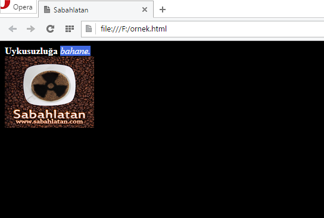

Web Geliştirmeye Giriş 1
Bir web sitesi oluşturmanın sayısız yolu vardır. Bunların hepsi temelde aynı olsa da, seviyelerine ve web sitesini farklı bakış açılarıyla oluşturmayı sağlamalarına göre birbirinden ayrılır. Şimdi soyut bir şekilde açıklamak yerine web geliştirmeyle uğraşmak isteyen bir kişinin bilmesi gereken kavramları teker teker açıklayalım.
Web geliştirme iki ayrı alana ayrılır; web tasarım ve web programlama. Web tasarım bir site üzerinde göze hitap eden kısımların oluşturulmasıdır. Tema çizimi, temaların HTML kodlarına dökülerek tarayıcı üzerinde çalışmasının sağlanması ve diğer grafik işleri web tasarım dahilindedir. Web programlama ise bu şekilde döküman halindeki bir siteyi bir sisteme dönüştürme sürecidir. Site etkileşimli bir hale getirilerek istenen işleri yapar hale gelir. Kısaca siteyi gerçek anlamda canlandıran programlama iken, giydiren tasarımdır.
Web geliştirmeye giriş için en başta kesinlikle öğrenilmesi gereken HTML’dir. Bu dilin programlama dilleriyle uzaktan yakından alakası yoktur. Bir işaretleme dilidir ve Microsoft Word gibi herhangi bir kelime işlemci programında döküman oluşturmaktan daha zor değildir. Web sayfasında olması gereken elemanlar HTML kodları ile eklenir. Sayfanın temel bilgileri ve özellikleri aynı şekilde HTML kullanılarak yönetilir.
CSS dili ise tamamen görselliğe yönelik bir tasarım dilidir. HTML ile oluşturulan elemanları çok detaylı biçimlerde şekillendirmek için kullanılır. 1990’ların sonu, 2000’lerin başı gibi görsellik için yalnızca HTML’in özellikleri kullanılmış olsa da, HTML bu alanı artık tamamen CSS’e devretmiştir. HTML ile bir sayfayı görsel yönden biçimlendirmeye çalışmak aşırı verimsiz bir yöntemdir. Kullanıcının elinde yavaş çalışan, standartlara uymayan ve ziyaretçilere birçok problem çıkaran bir site verir.
Bu noktaya kadar bahsettiğim kavramlar statik bir web sayfası oluşturmak için yeterli. Bunlarla elle düzenleyebileceğiniz, bir sisteme oturtulmamış fakat iş gören ufak tefek web siteleri oluşturabilirsiniz. Bu diller server, yani siteyi içinde bulunduran bilgisayar tarafında da; client, yani siteyi ziyaret eden kullanıcı tarafında da aynı şekilde çalışır. İşin içine server programlama girdiğinde ise işler daha renkli bir hal alır. Aynı şekilde iki tarafta da aynı şekilde çalışan, client dillerine kaldığımız yerden devam ederiz. Fakat şimdi web geliştirme adına bilinmesi gereken en önemli kavramlar için bir web sitesinin temellerine inelim.
Bir site aslında dosyadanlardan ibarettir. Statik bir web sitesinin dosyaları bir dökümandan farksızdır. İşin içine server programlama girdiğinde, programlama dili kullanılarak yazılmış kodlar bu sayfaları her seferinde ziyaretçiler için özel şekillerde baştan üretir. Fakat kodlar ziyaretçi tarafına yine bir döküman şeklinde ulaşır. Bir web sitesi hosting ve domain isminde iki önemli kavramın içinde barınır. Türkçesi barındırma alanı olan hostingler birer bilgisayardır ve sitenizin tüm dosyaları bu bilgisayarların içinde barınır. Bunlar internetten erişilebilen bilgisayarlar olduğundan dolayı sitenizin internette yayınlanabilmesine olanak verir. Evinizdeki bilgisayarlardan farkı online sistemler için özel olarak üretilmiş olmalarıdır. Serverlar için üretilmiş, çoğu bilinen masaüstü işletim sistemlerinin server versiyonu olan serverlar için özel olarak üretilmiş işletim sistemlerini kullanırlar. Dilediğinizde kendi bilgisayarınızı bir server’a çevirerek sitenizi internet üzerinde buradan yayınlayabilirsiniz. Domain veya alan adı ise web sitenize kolaylıkla bağlanılmasını sağlayan isimdir. Örneğin bu siteye erişmek için tarayıcınızın adres çubuğuna gireceğiniz “sabahlatan.com” adresi bu sitenin domainidir. Domain sistemi geliştirilmeden önce sitelere erişmek için sitelerin sahip olduğu ip adresleri kullanılıyordu. IP adresi halen sitelerin lokasyonunu belirleyen kavramlardan biri, sitelerin çoğunluğuna onların sahip olduğu IP adresini adres çubuğuna yazarak girebilirsiniz. Tabii bu olaya yalnızca siteye bağlanmak olarak bakmamak lazım. Temelde bir bilgisayara bağlanmak için kullanılan teknolojilerdir. Fakat bu bilgisayarda yayınlanan bir site varsa buna bağlanmış olursunuz. Sitenizi yayınlamak için yapmanız gereken ilk eylem bir domain ve bir hosting sahibi olmak olacak. Bunlar yıllık veya aylık olarak kiralanan ürünlerdir. Bunların ücretsiz versiyonları da mevcuttur, fakat profesyonel amaçlar için kullanılmaya uygun değildir. Hosting ve domaini aldıktan sonra ikisini kısa bir işlemle birbirine bağlar ve bu şekilde kullanırsınız.
Ziyaretçi tarafında çalışan bir diğer dil ise JavaScript dilidir. Bu bir programlama dilidir ve web sitelerinde çoğunlukla efekt tarzı olaylar için kullanılır. Bir sayfada tema üzerinde anlamsızca oynadığınız etkileşimli bölgeler varsa bunlar muhtemelen JavaScript, ufak bir ihtimalle CSS ile oluşturulmuştur. Bugün JavaScript ham haliyle pek kullanılmıyor. Bunun yerine jQuery gibi kodlamayı kolaylaştıran, açıkları gideren ve kullanıcıya sayısız imkan sunan JavaScript tabanlı kütüphaneler kullanılmakta.
Bir web sitesinin server tarafında ise serverda çalışan programlama dilleriyle yazılmış dosyalar bulunur. İnternette bu alana yönelik yaygın olarak PHP veya ASP.Net kullanılır. Bunların haricinde farklı bağımsız server dilleri olduğu gibi kimi masaüstü programlama dillerinin serverlar için özel olarak üretilmiş geliştirme platformları kullanılır. Bunlara orjinal ismiyle framework deniyor. Bu tarz bir programlama dili serverda çalışır ve kullanıcıya özel sayfa görüntülenmesini sağlar. Bunların kullanıldığı sitelerde statik sayfalar yerine duruma göre baştan yazılan sayfalar gösterilir. Bu şekilde gerektiğinde gizli kalması gereken içerikler server tarafında kalır, ziyaretçiye yalnızca kendini ilgilendiren bilgiler gönderilir.
Şimdi en basitinden bir web sayfası oluşturmaya başlayalım. HTML ile giriş yaparak CSS ile süsledikten sonra birkaç ufak tefek ekleme de yaparak bu yazıyı noktalıyoruz. Örnek üzerinde görürken bir yandan da bu dillerde bulunan temel komutları öğrenmiş olacaksınız.
Tüm HTML etiketleri bir yazılış standardına sahiptir. Bir web sayfası daima etiketiyle başlar ve etiketiyle biter. Bu ve bunun gibi soyut kodları yazmadığınız müddetçe sayfadaki somut öğeler yine görünür, fakat bu durumda standartlara uymazsınız ve web standartları artık bu işin temeli olmuş durumda. Örneğin arama motorları düzenli bir şekilde yazılmamış sayfaları sevmez ve desteklemez, dolayısıyla aramalarda üst sıralarında göstermez. Bu da hit kaybı demektir.
ve etiketlerinden görüleceği üzere html etiketleri küçüktür ve büyüktür işaretleri arasına yazılır. Çoğunlukla açılış ve kapanış olarak bir çift halinde bulunurlar. Sayfadaki diğer öğeler bu iki etiket arasında bulunur ve üzerinde işlem yapacakları objeleri bu şekilde iki taraftan sararlar.
Sıradaki eleman ise sayfanın özelliklerinin ve dolaylı yoldan kullanılan öğelerin bulunduğu etiketleridir. Burada sayfanın başlığı, sayfaya çeşitli şekillerde kullanılmak için çağrılan dosyaların kodları, sayfanın arama motorunda görünen açıklama benzeri bölümleri ve CSS kodları gibi soyut öğeler bulunur.
Bunların ardından etiketleri gelir. Sayfada fiziksel olarak bulunan her şey bu etiketlerin arasına yazılır.
Bu üç temel etiketi öğrendikten sonra şimdi sayfaya kısaca basit bir yazı yazmayı gösterelim. Fakat ondan önce etiketinden de bahsedelim. Sayfanın başlık çubuğunda görünen başlığı bu etiket arasına yazılır. İçinde yalnızca bir metin bulunan ve bir başlığa sahip olan örnek bir sayfanın kodları aşağıdaki gibidir.
Bu kodu bir HTML sayfasına çevirerek çalıştırmak için ihtiyacınız gereken tek araç Windows’un basit not defterinden daha fazlası değil. Not defteri uygulamasını açın ve bu kodları yazarak Dosya kısmından “Farklı kaydet” seçeneğini seçin. Dosyanın uzantısı “.html” olacak şekilde kaydedin. Örneğin ornek.html şeklinde bir isim yazabilirsiniz. Bunun dışında bir alt kısımdaki dosya türü seçeneğini “tüm dosyalar” olarak seçeceksiniz.

Bu işlemleri gerçekleştirdikten sonra tek yapacağınız kaydettiğiniz dosyaya çift tıklayarak herhangi bir tarayıcıda açmak olacak. Bu şekilde yalnızca bilgisayarınızda sizin erişebildiğiniz bir web sayfayı üretmiş oldunuz. Bunu bu şekilde yayınlamak için bir hosting ve domain edindikten sonra oraya atmanız yeterli. Kodlardaki girintilemeyi fark etmişsinizdir. Bunlar okunabilirliği arttırmak amaçlı, hemen hemen tüm programlama dillerinde kullanılan bir yöntemdir. Bunun dışında HTML yazdığınız kodları yorumlarken bıraktığınız birinci boşluktan sonrasını saymaz veya satırları görüntülemez. Bunun anlamı ne kadar boşluk eklerseniz ekleyin, tarayıcıda açtığınızda dosyada bunu yalnızca tek bir boşluk karakteri olarak göreceksiniz.
Sayfaya resim eklemek için etiketi kullanılır. Bu açılışı ve kapanışı olmayan, tek parça bir etikettir. Bu tarz kimi bağımsız öğelerde bu durum mevcut. Sayfada satır atlamak içinse etiketi kullanılır. Bu etiketlerin sonundaki boşluk ve slash ise işaretleri kapatma için bir etikete sahip olmadıklarından dolayı gerekiyor. İsterseniz şeklindeki eski versiyonunu da kullanabilirsiniz. Fakat web standartlarına uyan versiyonu slash içeren halidir. Şimdi bilgisayarda dosyayı kaydettiğiniz konumda yayına bir resim dosyası sürükleyin ve ismini resim.jpg olarak kaydedin. Tabii uzantısı jpg olmak koşuluyla. Ardından sayfa kodlarındaki “Uykusuzluğa bahane” metinin hemen yanına bir ardından kodunu yazın. Bu şekilde “resim.jpg” ismine sahip resmi sayfaya çekmiş oldunuz. İsterseniz “src” kısmına bilgisayardaki bir resmin ismini yazmak yerine internetten bulduğunuz bir resmin adresini ekleyebilirsiniz. Tüm bunları yaptıktan sonra kodların son hali aşağıdaki gibi olacaktır.
Yazının istediğiniz bir bölümünü kalın hale getirmek için o kısmı , italik hale getirmek içinse etiketleri arasına alırsınız. Şimdi elimizdeki kodlar üzerinde bir deneme yapalım.
Resim boyutlarını küçültmek için ise aynı etiketin içerisinde width ve height şeklindeki en ve boy anlamına gelen iki parametreyi ekleyeceksiniz.
Şimdi yavaş yavaş CSS kodlarına geçelim ve yazıyı burada bitirelim. CSS kodlarını sayfada çalıştırmak için 3 ayrı yöntem mevcut. Bunları etiketinin arasında etiketi arasına yazabilir, ayrı bir .css uzantılı dosya olarak kaydederek yine kısmından çağırabilir veya sayfada hangi elementi etkilemek istiyorsanız onun parametresi olarak yazabilirsiniz. Bunun detaylarına şimdilik girmiyoruz, anlaşılması kolay olsun diye bu derste etiketlerinin arasına yazma yöntemi işimizi görür.
CSS kodları en basit haline indirgenecek olursa şu formattadır:
element { özellik1: değer1; özellik2: değer2; }
Örneğin sayfanın arkaplan rengini değiştirmeyi deneyelim. Sayfa denen kavram HTML’deki body etiketinden ibarettir. O yüzden ona yönelik bir kod yazılacak. Sayfanın arkaplan rengi siyah olsun ve yazıları da okunabilsin diye beyaz yapalım.
body { background: black; color: white }
Şimdilik bu kadar öğrenmeniz yeterli. Web dillerinde renklere ulaşmak için 16’lık sayı sistemindeki kodlarını kullanmak çok ayrıntılı renklere ulaşabilmenizi sağlayıp daha verimli olsa da, temel renklere yalnızca İngilizce ismini yazarak ulaşabilmeniz mümkün. Burada background, yani arkaplan rengini siyah; color, yani sayfadaki yegane eleman olan yazıların rengini beyaz yaptık. CSS kodlarında genellikle sayfadaki tüm elemanlara özel olarak ulaşılarak göreceli olarak biçimlendirilir. Fakat şimdilik basit olması açısından bu şekilde tüm elemanları etkileyecek kodlar yazıyoruz.
Son olarak örneğin etiketine bir özellik atayalım. Örneğin arkaplanı mavi olsun. Açıkçası tam anlamıyla mavi diye bilinen rengi değil; göze hoş gelen, royalblue isimli bir rengi kullanıyorum.
em { background: royalblue; }
Şimdi bunları sayfaya ekleyelim.
Şimdi tüm bu kodlamaların bir sonucunu görelim.

Yazı kapsamlı gelmiş olabilir, fakat bilişim veya web evreninde yapabileceklerinizin bir sınırı yok. Kendiniz de yeni teknikler ve kodlamalar geliştirebildiğinizden dolayı bu alan her geçen gün gitgide büyüyen bir dünyadır.